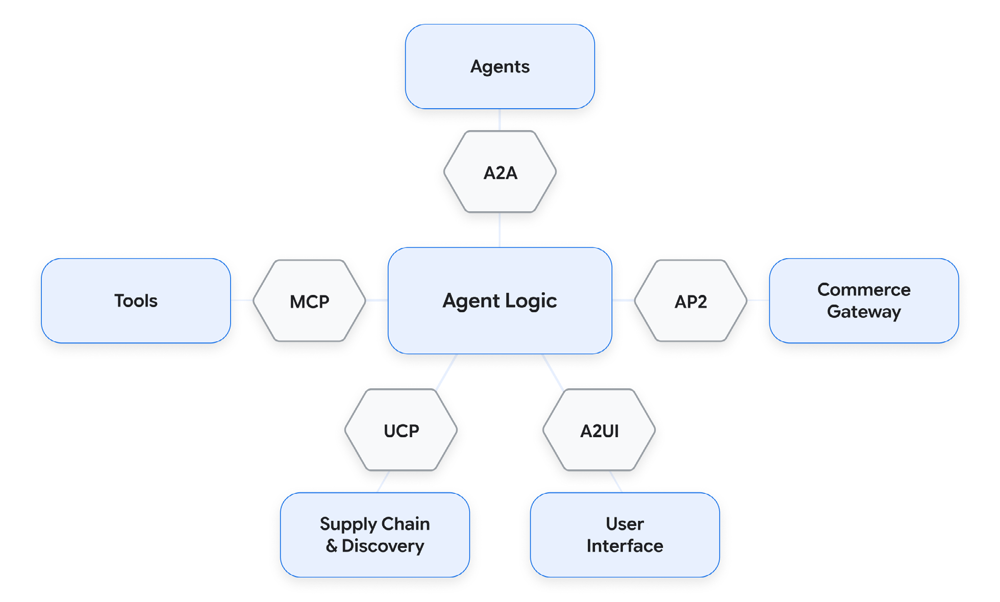
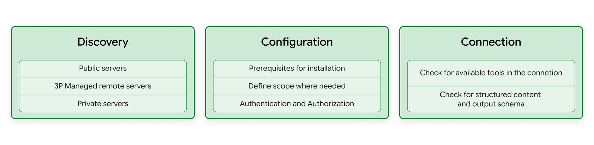
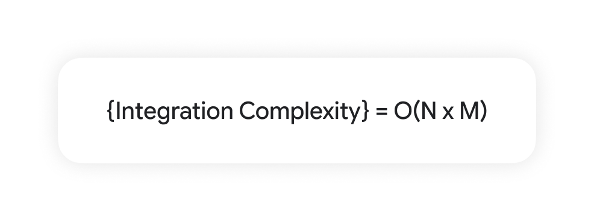
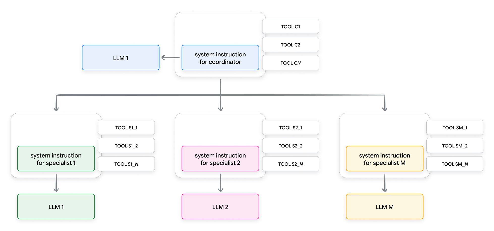
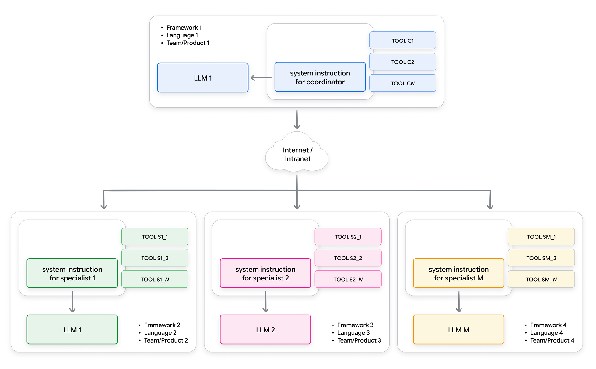
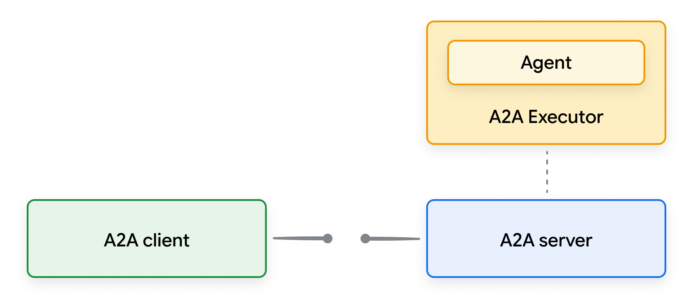
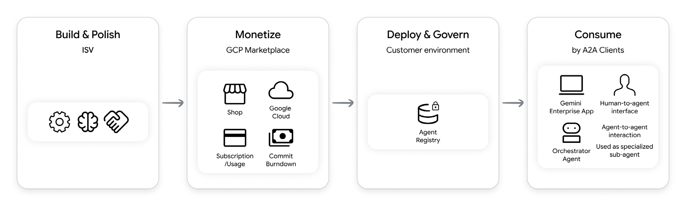
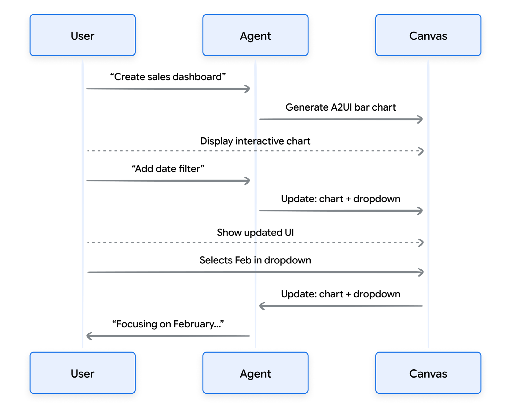

آینده نرمافزار، نوشته نمیشود: بلکه توسط عاملهای تعاملپذیری رهبری میشود.
مقدمه
در روز اول، ما تغییر پارادایم از توسعه نرمافزار سنتی به مهندسی عاملمحور (Agentic engineering) را خلاصه کردیم و مدل کارخانه (Factory model) را معرفی کردیم، جایی که نقش اصلی شما به عنوان توسعهدهنده دیگر کد خام نیست، بلکه سیستم تولیدکننده کد است. ما معماری اصلی این سیستم را تعریف کردیم:

اگر مهندسی عاملمحور نمایانگر کف کارخانه است که شما رهبری میکنید، آنگاه MCP، A2A، A2UI، AP2 و UCP استانداردهای صنعتی هستند — پیچها، مهرهها و اندازههای پیچ یکسان، فرمتهای داده، و کانالهای ارتباطی که به شما اجازه میدهند دستگاه خود را به طور ایمن با بقیه جهان تعامل داشته باشد.
بدون این پروتکلهای باز، هر عامل که میسازید به عنوان یک «ماشین سفارشی» جداگانه در یک گاراژ وجود دارد. شما مجبورید ساعتها و توکنهای (token) خود را صرف نوشتن بستههای JSON شکننده و سفارشی برای هر ابزار (tool) و اتصال API کنید، که شما را در نقش رهبر ارکستر (Conductor) با بازدهی پایین گیر میاندازد.
با پذیرش لایههای استاندارد قابل تعامل، معماری مهار (harness) عامل خود را به یک پلتفرم ماژولار و آماده برای استفاده تبدیل میکنید. شما کمتر وقت صرف دیباگ بستههای JSON سفارشی میکنید و بیشتر وقت صرف هدایت قصد (intent) سطح بالا به عنوان یک هماهنگکننده (Orchestrator) میکنید.
• OpenResponses & Interactions API هر دو «پریزهای قدرت» هستند، رویکردهای مدرن به استنتاج LLM که از کارهای طولانی پشتیبانی میکنند. اینها خط بین یک پاسخ تکمرحلهه بدون حالت و یک عامل دارای حالت را محو میکنند.
• MCP (پروتکل زمینه (context) مدل) به عنوان «USB-C» در مهار عامل شما عمل میکند و به طور فوری مدلها را به پایگاههای داده، فایلسیستمها و APIهای وب متصل میکند.
• مهارتها (skill) «کتابچههای عمل» هستند، دستورالعملها و اسکریپتهای ساده مارکداون یا ابزاری هستند که میتوانند در محیط سندباکس (sandbox) مانند ترمینال استفاده شوند.
• A2A (عامل به عامل) به عنوان «رادیوی کارخانه» عمل میکند و به عاملهای تخصصی اجازه میدهد تا با هم مذاکره کنند، ایدهپردازی کنند و وظایف را به یکدیگر محول کنند.
• A2UI (عامل به رابط کاربری) مانند یک «پنجره نمایش تولیدی» عمل میکند و خروجیهای JSON خام و پیچیده را به اجزای بصری تعاملی و امن برای عملگران انسانی تبدیل میکند.
• AP2 و UCP به عنوان «زنجیره تأمین جهانی و شبکه تراکنش» عمل میکنند و به عاملها اجازه میدهند به طور ایمن مذاکره کنند و تراکنشهای تجاری خودکار را اجرا کنند.
این مقاله بر این تمرکز دارد که چگونه کدنویسهای شهودی میتوانند به سرعت از برخی از این پروتکلها برای ساخت یک تیم داده و اجرایی مجازی در یک عصر بعدی استفاده کنند.

چرا این مقاله، چرا حالا
در عصر کدنویسی شهودی (Vibe coding) با کمتر ساختار، مهارها و پروتکلها به ساخت اعتماد در فرآیند توسعه عامل کمک میکنند. در حالی که سرعت نتیجه همچنان محرک (trigger) اصلی برای practitioners و توسعهدهندگان است، پروتکلهای استاندارد به ما اجازه میدهند در دستیابی به اهداف پیچیده بسیار فراتر برویم با تبدیل ماشینهای جداگانه «سفارشی» به پلتفرمهای ماژولار و قابل تعامل. بدون استانداردهای باز توافق شده، توسعهدهندگان بدهی فنی ایجاد میکنند، هر API یک استاندارد-تک است. اینها وظایف با بازدهی پایین هستند، نوشتن بستههای سفارشی شکننده برای هر ابزار، حفظ آنها در طول زمان و سازگار با نیازهای دیگران. پذیرش این لایهها اجازه میدهد از یک سازنده ساده به یک هماهنگکننده سطح بالا تغییر کند.
این مقاله برای چه کسانی است؟
این مقاله به طور خاص برای مهندسان نرمافزار، مدیران مهندسی، معماران و رهبران فنی طراحی شده است که میدانند که تغییر به سمت مهندسی عاملمحور نیاز به انطباق دقیق پروتکلها برای حفظ وفاداری و قابلیت اطمینان نتایج دارد. این به عنوان راهنمای عملی برای «کدنویسهای شهودی» که سرعت و نتایج بصری را اولویت میدهند، عمل میکند و نشان میدهد چگونه یک تیم داده و اجرایی مجازی بسازید.
در مقاله سفید روز اول، ما توصیه کردیم استفاده از یک فایل AGENTS.MD برای ارائه راهنمایی استاندارد برای عاملهای کدنویسی.
همیشه ابتدا عمیقاً قبل از اینکه کد بنویسید فکر کنید — به طور صریح اصول خود را بیان کنید، چالشهای موجود را نمایان کنید و هنگامی که به ابهام برخورد کردید، توقف کنید و سوال روشن کنید به جای اینکه به صورت ناشناس حدس بزنید.
فقط به مقدار کمینه کدی که برای حل مسئله فوری لازم است بنویسید، با اجتناب صریح از قابلیتهای فرضی، انتزاعات درخواستی یا پیکربندیهای پیشبینیانه. هنگام ویرایش کد موجود، تغییرات بسیار جراحی انجام دهید با محدود کردن بهروزرسانیهای خود فقط به خطوط دقیقی که برای برآورده کردن درخواست لازم هستند، حفظ دقیق سبک موجود و رها کردن کد مجاور و کامل بدون تغییر مگر اینکه تغییرات شما مستقیماً یا به طور غیرقابل اجتناب import یا متغیر را از دست بدهند. در نهایت، هر کار را از طریق اجرای مبتنی بر هدف با شکستن آن به یک برنامه واضح و قدم به قدم با معیارهای موفقیت قوی، مانند نوشتن یک تست (test) تولیدکننده یا شکستخورده ابتدا و حلقه (loop) مستقل بررسی تا آن هدف خاص به طور دقیق برآورده شود.
دیدگاه کدنویس شهودی از MCP: کشف، پیکربندی و اتصال
روش سنتی شرکتها برای آوردن ابزارها به یک LLM سیمکشی سفارشی است. هر اتصال جدید نیازمند بستههای REST سفارشی، کلیدهای API، سیاستهای (policy) تازهسازی توکن و پارسرهای JSON سفارشی است. MCP این اصطکاک را با یک ساککت استاندارد جایگزین میکند. راهاندازی عامل کدنویسی شما سه مرحله ساده شامل میشود:

کشف
کدنویسهای شهودی بستههای اتصال سفارشی نمینویسند، آنها سرورهای MCP آماده ساخته شده از منابع اصلی سه پیدا میکنند:
- فهرستهای ثبتی عمومی MCP: فهرستهای ثبتی عمومی موجود، صدها سرور آماده ساخته شده (مثل registry.modelcontextprotocol.io، github.com/mcp) میزبانی میکنند. اینها برای نمونهسازی سریع محلی عالی هستند اما بدون بررسی شده و به طور خطرناکی استفاده میشوند.
- سرورهای MCP راه دور سومبخش (3P): پلتفرمهای ویزیت شده نقاط پایانه میزبانی شده را آشکار میکنند. فهرستهای ثبتی مدیریت شده و پیشازتست از منابع رسمی پیدا کنید. به عنوان مثال، سرورهای MCP منتشر شده توسط گوگل (مثل گوگل مپ، BigQuery، گوگل دوک) به عامل شما اجازه میدهد به طور امن با سرویسهای مدیریت شده تعامل داشته باشد.
- فهرستهای ثبتی داخلی: داخل یک سازمان، ابزارهای داخلی به عنوان سرورهای MCP آشکار میشوند و در یک ثبتنام امن فهرست میشوند. پیادهسازی فنی این ثبتنام معمولاً از طریق دروازه (gate) API، ثبتنام عامل GCP یا یک پورتال میکروسرویس خصوصی مدیریت میشود.
هنگام تصمیمگیری همیشه امنیت را به عنوان اولویت اول در نظر بگیرید، جایی که ممکن است دستورالعملهای رسمی را پیدا کنید.
اگر از سرورهای جامعه عمومی استفاده میکنید، توکنهای احراز هویت (identity) را منتقل نکنید، در نظر گرفتن استفاده از خدمات مانند Model Armor برای جلوگیری از مشکلات امنیتی.
پیکربندی
قبل از اتصال، پارامترهای استانداردی را که دامنه و مجوزهای سرور را مشخص میکنند، تعیین کنید. این شامل تنظیم فایلهای محیطی برای مدیریت کلیدهای API (مانند توکنهای دسترسی شخصی یا اسرار OAuth) و تعریف مجوزهای خواندن/نوشتن برای حفاظت از فایلسیستم شماست.
- بررسی پیشنیازها
- شناسایی دامنه و معیارهای دسترسی
- شامل مشخصات (spec) در عامل کدنویسی
- احراز هویت
اتصال
پس از پیکربندی، مشتری اتصال را با سرور برقرار میکند. برای تأیید اتصال، کلاینت میزبان یک درخواست دست دادن پایه را اجرا میکند تا ابزارهای موجود را فهرست کند و خروجی اسکیما (schema) را تأیید کند.
دور زدن مسئلهٔ N×M در نمونهسازی
برای درک اینکه چرا MCP برای نمونهسازی سریع حیاتی است، به ریاضیات ادغام نگاه کنید. اگر در حال آزمایش با N مدلهای مختلف (Gemini 3.1 Pro، Gemini 3 Flash， Gemini 3.5 Flash یا یک مدل باز منبع محلی) هستید و میخواهید آنها را به M ابزار خارجی مختلف (Jira، BigQuery، GitHub، گوگل درایو) متصل کنید، توسعه ad-hoc سنتی نیازمند نوشتن کد ادغام سفارشی برای هر تقاطع مدل-ابزار است:

اگر 5 مدل و 10 ابزار داشته باشید، باید 50 نقطه ادغام سفارشی را نگه دارید. اگر یک ابزار API تغییر کند، بدون پروتکل در جایگاه، چندین حلقه پارسر شکسته میشوند.
ادغام سنتی: استانداردسازی تعاریف ابزار به طور مستقیم به مهار عامل شما بدون نوشتن کد ادغام متصل میشوند:
- stdio (ورودی/خروجی استاندارد): معمولاً با تلاشهای محلی و نمونهسازی استفاده میشود. عامل کدنویسی شما میتواند بدون تنظیم پیچیده اتصال شبکه اجرا شود، زیرا ابزار را به عنوان یک فرآیند محلی در نظر میگیرد. کلاینت میزبان سرور MCP را به عنوان فرآیند پسزمینه محلی اجرا میکند، پیامهای JSON-RPC 2.0 را از طریق stdin و stdout منتقل میکند.
- SSE (رویدادهای ارسالی سرور) روی HTTP: کلاینت میزبان (میتواند محلی یا یک برنامه عاملمحور مستقر شده باشد) از طریق پروتکلهای وب استاندارد به یک سرور MCP راه دور متصل میشود و دادهها را به طور واقعی به عامل میپردازد. این بسیار مزایایی نسبت به رویکرد استودیو دارد، کمتر وابستگی، همیشه بهروز، شتاب کمتر و چرخه حیات سادهتر، اما بار بیشتری روی سرور MCP میزبانی شده در ابر دارد.
هر دو گزینه به کدنویسهای شهودی اجازه میدهد پلتفرم را بدون چندین لایه ادغام سفارشی پذیرفت.
دیباگ مشکلات با سرورهای MCP
هنگامی که عامل شما پارامترها را کپیپیست میکند، ابزار اشتباهی را فراخوانی میکند یا نمیتواند یک بارگذاری را پردازش کند، وقت را هدر ندهید و به طور ناشناس دستورالعملهای سیستم خود را تغییر دهید. لولههای حملونقل را مستقیماً دیباگ کنید:
- بازبین MCP: یک ابزار توسعهدهنده بومی است که یک پنل وب محلی اجرا میکند. به شما اجازه میدهد هر سرور محلی یا راه دور MCP را به صورت دستی بپرسید، اسکیماهای ابزار فعال را ببینید، ورودیهای بارگذاری را به صورت دستی تست کنید و بستههای JSON-RPC 2.0 خام را بدون شروع گردش کار عامل اصلی خود بررسی کنید.
- Chrome DevTools: عالی وقتی که محیطهای توسعه مبتنی بر وب را اجرا میکنید یا اتصالات SSE را دیباگ میکنید، به شما اجازه میدهد جریانهای وب ورودی را ردیابی کنید و برای کندی سرور بررسی کنید.
جعبهابزار کدنویس شهودی: بهترین روشها برای مصرف MCP
برای حفظ سرعت بدون فدا کردن پایداری، کدنویسهای شهودی باید هنگام مصرف سرورهای MCP به این دستورالعملها پایبند باشند:
- انجام کنید (بهترین روشها):
- سرورهای عمومی را قبل از اتصال بررسی کنید: همیشه کد سرورهای عمومی موجود و متنباز MCP را قبل از اتصال آنها به یک عامل که دسترسی به فایلسیستم یا اعتبارات محلی دارد، بررسی کنید.
- از RAG برای ابزارها استفاده کنید: حافظه (memory) پنجره زمینه عامل خود را تمیز نگه دارید. ابزارها را به صورت پویا (Static) از یک ثبتنام بارگذاری کنید فقط زمانی که لازم است و آنها را از زمینه هنگامی که کار تمام شده است حذف کنید تا جلوگیری از تمرکز ضعیف.
- از دروازه API داخلی و فهرستهای ثبت استفاده کنید: اگر ممکن است، به فهرستهای ثبتی ابزار داخلی تکیه کنید. این تضمین میکند که شما در حال مصرف دادههای اسکیما تایید شده و اداره شده هستید به جای اینکه چرخهای را دوباره اختراع کنید یا کد بدون بررسی اجرا کنید.
- از بازبین MCP استفاده کنید: هنگامی که عامل یک فراخوانی ابزار با استدلالهای خود را کپیپیست میکند، از بازبین MCP یا Chrome DevTools برای نگاه کردن به دادههای حملونقل خام به جای تغییر ناخواسته دستورالعمل سیستم عامل استفاده کنید.
- از HITL استفاده کنید: ورودیهای ابزار را به کاربر قبل از فراخوانی سرور نشان دهید، تا جلوگیری از دادههای مخرب یا تصادفی خارج از سیستم
- نیازهای بررسی را شامل کنید: ثبت استفاده از ابزار برای اهداف بررسی
- نکنید (عیبهای رایج):
- اگر میتوانید مصرف کنید، نباید بسازید: مقاومت در برابر میل نوشتن بستههای REST API سفارشی. ابتدا سرور MCP موجود را جستجو کنید تا حفظ فلسفه «خروجی جهانی».
- در تولید از MCPهای عمومی و بدون بررسی استفاده نکنید: سرورهای MCP متنباز برای پروتوتایپهای آخر هفته عالی هستند، اما ریسکهای امنیتی و پایداری دارند. نباید منطق کسبوکار اصلی را به نقاط پایانه عمومی بدون بررسی یا کد بسته ابزار وابسته کنید.
- توکنهای احراز هویت را هاردکد نکنید: در مرحله پیکربندی، هرگز کلیدهای API یا توکنهای احراز هویت را مستقیماً در دستورالعمل عامل یا اسکریپتهای محلی خود کپی نکنید. به متغیرهای محیطی تکیه کنید تا اعتبارات را به سرور MCP منتقل کنید.
- به تولید متصل نشوید: سرور MCP را با یک پروژه توسعه، نه تولید استفاده کنید. LLMها عالی هستند برای کمک به طراحی و تست برنامهها، بنابراین آنها را در یک محیط امن بدون نمایش دادههای واقعی بهرهبرداری کنید. مطمئن شوید که محیط توسعه شما شامل دادههای غیرتولیدی (یا دادههای پنهانسازی شده) است.
- برای بهروزرسانیها از آن استفاده نکنید: اگر باید به دادههای واقعی متصل شوید، سرور را در حالت فقط خواندن تنظیم کنید که همه پرسوجوها را به عنوان فقط خواندن اجرا میکند.
- به همه پروژهها دسترسی وسیع ارائه ندهید: دامنه سرور MCP خود را به یک پروژه خاص محدود کنید، محدود کردن دسترسی به منابع آن پروژه فقط زمانی و به اندازهای که لازم است و ممکن است.
تعاملپذیری عامل به عامل (A2A)
همانطور که سیستمهای هوش مصنوعی به شبکههای توزیعشده تخصصی متخصصان حوزه تغییر میکنند، استانداردسازی ارتباط برای مقیاسدهی حیاتی است. این بخش پروتکل عامل به عامل (A2A) را به عنوان لایه بنیادی بررسی میکند که شکاف اکوسیستم را حل میکند، توسعهدهندگان را قادر میسازد تا عاملهای جهانی تعاملپذیری را کشف، رهبری و درآمدزایی کنند.
تکامل معماریهای عاملمحور
برای درک اینکه کدنویسی شهودی در تکامل معماریهای عاملمحور چه جایگاهی دارد، میتوانیم الگوی تکرار شوندهای را در فناوری مشاهده کنیم: تغییر از پیکربندی دستی، سطح پایین به رهبری سطح بالا، مبتنی بر قصد و اعلانی که وقتی کاربرها نمیگویند چگونه چیزی بسازند، بلکه چه چیزی را نیاز دارند.
یک روند موازی در تاریخ زیرساخت IT یافت میشود که ما از پیکربندیهای دستی به اسکریپتهای اعلانی «زیرساخت به عنوان کد» تغییر کردهایم. یک روند مشابه در تاریخ یادگیری ماشین رخ داده است. رویای پیشرو از گوگل در مورد یادگیری ماشین خودکار (AutoML) این بود که هوش مصنوعی را دموکراتیزه کند با اتوماسیون «کارهای زجرآور» ایجاد مدل:
«یکی از راههایی که امیدواریم هوش مصنوعی را در دسترستر کنیم، سادهسازی ایجاد مدلهای یادگیری ماشین به نام شبکههای عصبی است. امروز، طراحی شبکههای عصبی بسیار زمانبر است... به همین دلیل ما رویکردی به نام AutoML ایجاد کردهایم که نشان میدهد ممکن است شبکههای عصبی شبکههای عصبی را طراحی کنند. امیدواریم AutoML بتواند آن قابلیتی را که امروز چند PhD دارند...»۱
امروز، فناوری به ما اجازه میدهد کل برنامهها را به طور شهودی کدنویسی کنیم. با این حال، مسیر (trajectory) معماریهای عاملمحور استفاده شده برای کدنویسی شهودی این برنامهها، در حال حاضر یک تغییر مهم در تاریخ نرمافزار را منعکس میکند: تغییر از ماژولار به معماریهای میکروسرویس.
همانطور که برنامههای وب اولیه به عنوان یک کدباس واحد و عظیم ساخته میشدند که هر تابعی (صدور فاکتور، رابط کاربری، پایگاه داده) به طور تنگاتنگ وصل بود، بسیاری از پروژههای اولیه کدنویسی شهودی به یک «اردوگاه اسلحه سوئیسی» عامل تک تکه وابسته بودند. این شامل وابستگی (dependency) به یک عامل تک، بسیار پیچیده است که یک عامل چند تیغه با دهها ابزار وصل شده برای مدیریت همه چیز از پرسوجوهای پایگاه داده تا رندر رابط کاربری و تست استفاده میکند. در حالی که این به یک توسعهدهنده اجازه میدهد یک پروتوتایپ در یک آخر هفته سیمکشی کند، در نهایت به همان «سقف ماژولار» برخورد میکند که برنامههای وب اولیه را آزار میدهد:
- اصطکاک مقیاسدهی: شما نمیتوانید فقط «منطق پایگاه داده» را بهینه کنید بدون اینکه احتمالاً «رابط کاربری» را در همان دستورالعمل گیج کنید. همچنین، هرچه بیشتر یک عامل ابزارهایی را داشته باشد، تصمیمگیری او بدتر میشود. فضای جستجو برای اقدام بعدی او به سادگی زیاد است، منجر به پارامترهای کپیپیست شده یا فعال کردن ابزارهای اشتباه.
- بارگذاری ابهام: پر کردن دستورالعملهای سیستم فراگیر، دهها اسکیما ابزار پیچیده و تاریخچه گفتگوی مداوم در یک دستورالعمل واحد، سریعاً حافظه کار مدل را پر میکند.
- نقطه شکست واحد: یک باگ در یک «ابزار» یا دستورالعمل میتواند کل عامل را کپیپیست کند یا کرش کند. دادههای نامربوط یا خراب در زمینه حمل میشوند، شکستن استدلال آینده.
برای غلبه بر این بافتها، میتوان یک نقشهبرداری مشابهی را که مهندسان ML و نرمافزار سالها پیش ترسیم کردند، دنبال کرد. وقتی مدلهای اولیه AutoML موفقیت تجاری خود را اثبات کردند، تیمها نادراً این جعبه سیاه خودکار تولید شده را در هسته کسبوکار رها کردند. برای رسیدن به مقیاس تولید، آنها باید این جعبه سیاه را به مراحلی قابل مشاهده و نگهداری شکستند — نسخهبرداری داده، فروش ویژگیها، تشخیص پرش. با تخصصیابی اجزا، آنها قانون بنیادی طراحی سیستم را اعمال کردند: تخصص به عنوان یک مکانیسم مقیاسدهی.

تخصص داخلی با منطقی کردن تقسیم یک عامل ماژولار به زیر-عاملهای هدفمندی مشخص انجام میشود. هر عامل توسط یک دستورالعمل سیستم بسیار متمرکز و زیرمجموعه ابزارهای مرتبط حکومت میشود. این همچنان ماژولار است زیرا این زیر-عاملهای داخلی در مرزهای شبکه ارتباطی ندارند. به جای اینکه، آنها runtime مشترک و حافظه زیرین را به اشتراک میگذارند.
این منطقی کردن تقسیم به توسعهدهندگان اجازه میدهد تا تعاریف پیچیده را ماژولار کنند در حالی که حفظ شتاب اجرای کمزمان و مدیریت حالت ساده موجود در یک برنامه تک-فرآیند. در عین حال این ماژولاری مشکلات ناشی از سیستمهای عامل تک را از طریق چند بهبود فنی کلیدی حل میکند:
- کاهش فضای جستجو: با محدود کردن ابزارها و مهارتهای زیر-عامل (مثلاً دادن به یک عامل پایگاه داده فقط ابزارهای پرسوجو)، ما به طور چشمگیری خطاهای فراخوانی ابزار و کپیپیستها را کاهش میدهیم.
- کاهش تمرکز توجه: تخصص به عامل زیرین اجازه میدهد LLM زیرین روی یک دستورالعمل حوزه خاص تمرکز کند، منجر به استدلال sharper.
- بهینهسازی بارگذاری زمینه: زیرا هماهنگکننده وظایف را پردازش میکند به جای پردازش کل درخت منطق، زیر-عاملها نسبت سیگنال به نویز بالا را در کانتکست ویندوها خود حفظ میکنند.
با بالغ شدن معماریهای عاملمحور، یک تغییر اکوسیستم مهم مبتنی بر معماریهای عاملمحور توزیعشده چندعاملی در حال پیشرفت است. رهبران صنعت — از جمله گوگل، سلفایس، ServiceNow و Workday — فراتر از ارائه APIها حرکت میکنند. این سازمانها سرویسهای AI مخصوص حوزه را مستقر میکنند که به طور خاص برای navigative اکوسیستمهای خصوصی آنها با دقت بومی طراحی شدهاند.

این تغییر فرصت استراتژیک برای توسعهدهندگان ایجاد میکند. با این حال، برای رسیدن به لایه بعدی مقیاس، رهبران فنی و تجاری باید با یک «ساخت در مقابل خرید» مدرن، تمرکز خود را بیرحمانه اولویتبندی کنند.
در حالی که فنی امکانپذیر است که یک سیستم عاملمحور چندعاملی با زیر-عاملهای سفارشی ساخته شده برای پلتفرمهای سومبخش (مثلاً زیر-عامل سفارشی برای ServiceNow یا زیر-عامل سفارشی برای Salesforce و غیره) ساخت کنید، این رویکرد یک مالیات نگهداری بزرگ معرفی میکند. با انتخاب توسعه سفارشی متخصصان حوزه، توسعهدهنده مسئول کامل بهروزرسانی منطق دستورالعمل و تعاریف ابزار را که بازتاب بهروزرسانیهای محصول بالادستی و تغییرات اسکیما API هستند، به عهده میگیرد.
یک استراتژی معماری بهتر برای ساختن برنامههای با ارزش بالا این است که از عاملهای تخصصی رسمی بهرهبرداری کنید. این عاملها توسط تیمهایی با تخصص داخلی عمیق نگهداری میشوند، تضمین بیشترین پایداری و عملکرد. با انتقال نگهداری منطق تخصص حوزه به این موجودیتهای رسمی، هماهنگکننده — و به طور گسترده توسعهدهندگان — میتواند به طور کامل بر ارزش کاربری منحصر به فرد و نوآوری هسته تمرکز کند.
با این حال، تلاش برای رهبری این تیم مجازی عاملهای تخصصی توزیعشده، یک بافت جدید ایجاد میکند: تفکیک. هر یک از این عاملهای تخصصی میتواند توسط تیمی مختلف ساخته شود، با فناوریهای مختلف استفاده شود. عامل گوگل ممکن است با Python، Go یا Java با ADK نوشته شده باشد، عامل سلفایس ممکن است روی فریمورک LangChain اجرا شود، و Workday ممکن است از چیزی کاملاً سفارشی استفاده کند. آنها خارج از مرزهای شبکه ما هستند، زبانهای متفاوتی صحبت میکنند، ساختار بارگذاری کاملاً متفاوت را انتظار دارند، حالت گفتگوی متفاوتی را پردازش کنند و لایههای حملونقل متفاوتی را وابسته دارند.
اگر توسعهدهنده باید برای هر عامل تخصصی که میخواهد استخدام کند، کد ادغام سفارشی و حلقه اصلاح خطای سفارشی بنویسد، مفهوم «تیم مجازی» به طور فوری به یک تلاش ادغام تبدیل میشود. مالیات نگهداری برای حفظ همه این پلهای سفارشی از سقوط، کل پروژه را مصرف میکند.
این آشوب تفکیک دقیقاً چیزی است که پروتکل عامل به عامل (A2A) [A2A] طراحی شده است تا استاندارد کند. A2A، در ابتدا توسط گوگل توسعه داده شد و اکنون به بنیاد لینوکس اهدا شده است، یک لایه ارتباطی جهانی برای سیستمهای عاملمحور معرفی میکند. به عنوان زبان مشترک اکوسیستم هوش مصنوعی عمل میکند، انتزاع از جزئیات حملونقل شبکه، فریمورکهای زیرین، زبانهای برنامهنویسی و ناهماهنگی بارگذاری را.
این تضمین میکند که هماهنگکننده مرکزی میتواند هر عامل تخصصی را در اکوسیستم کشف کند، onboard کند و با هم همکاری کند، کاملاً نسبت به اینکه این تخصص چگونه زیر پوشه ساخته شده است بیتفاوت است. همانطور که HTTP استاندارد وب را استاندارد کرد، A2A نیروی کار مجازی را استاندارد میکند.
دامنههای کراندار و بیکران
این دقیقاً یکی از دلایل است که عامل هوش مصنوعی تخصصی را به عنوان یک ابزار ساده باقی نمیگذارد. یک ابزار استاندارد یا API در یک مکانیزم fire-and-forget عمل میکند. انتظار یک درخواست تک، دقیقاً فرمت شده (بارگذاری اسکیما) را دارد و یک پاسخ برمیگرداند. محیطهای نرمافزاری دنیای واقعی اغلب حاوی معادل دیجیتال دیوارهای کج داده هستند: ساختارهای داده مبهم، نیازهای گمراهکننده و ترجیحات کاربر متضاد.
یک عامل، با این حال، در یک فضای حل مسئله نامحدود عمل میکند. محیطهای نرمافزاری دنیای واقعی پر از ساختارهای داده مبهم، نیازهای گمراهکننده و ترجیحات کاربر متضاد هستند. شما نادراً میتوانید تمام جزئیات لازم را در یک گردش کار پیچیده بدون تکمیل چندمرحلهای مشخص کنید. معادل دیجیتال دیوارهای کج.
مسئلهٔ GOTO در معماری عاملمحور
چون دامنه یک عامل نامحدود است، تلاش برای اجبار یک عامل به یک بسته ابزار استاندارد، معادل معماری یک عبارت GOTO را در هماهنگکننده شما معرفی میکند.
هنگامی که یک عامل همکاریکننده را فراخوانی میکند، جریان کنترل از زمینه ساختاریافته انتظار خارج میشود. عامل ممکن است به یک حالت قطع برسد، اطلاعات بیشتری بخواهد و در صورت تغییر نظر کاربر یا رها کردن دستورالعمل، احتمالاً هرگز خروجی انتظار را به فراخواننده اصلی برنگرداند.
به یک پارادایم نیاز دارید که این حالت چندمرحلهای آشفته را جدا کند. به یک پروتکل نیاز دارید که به عامل دامنه اجازه میدهد اجرای خود را متوقف کند، به عقب به هماهنگکننده بازگردد، راهحلی را مذاکره کند و سپس کار خود را بدون از دست دادن حالت گفتگوی خود ادامه دهد.
این دقیقاً شکافی است که پروتکل A2A پر میکند. با جدا کردن این همکاری مسیریابی (routing) به لایه A2A، لایه ابزار (MCP) را تمیز، قابل پیشبینی و به طور دقیق ساختاریافته نگه میداریم.
ساختن نیروی کار مجازی
معرفی پروتکل A2A و تغییر به سمت تخصص بیش از حل مشکلهای فنی — ایجاد بنیاد برای مارکتپلیسهای جدید برای تخصص که یک مدل جدید در نحوه تحویل ارزش نشان میدهد.
بدون A2A، یک توسعهدهنده ممکن است یک برنامه بسازد و با افزایش پیچیدگی آن مبارزه کند. در عصر A2A، همان توسعهدهنده میتواند تمرکز کند بر بهینهسازی یک حوزه با ارزش بالا — مانند عاللی که به «انطباق مقررات زمان واقعی» تخصص دارد. چه بسازیده شود به عنوان یک عامل چندعاملی ماژولار پیچیده یا یک برنامه توزیعشده، این سیستمها اکنون میتوانند به عنوان عاملهای سازگار با A2A به جهان آشکار شوند. این به این معنی است که یک عامل تخصصی به طور شهودی در یک بخش از جهان میتواند توسط یک هماهنگکننده دیگر در سراسر جهان کشف و «استخدام» شود.
کارت عامل
برای تسهیل این کشف، هر عامل توسط یک کارت عامل تعریف میشود. این «رزومه» استاندارد دنیای هوش مصنوعی است که یک هویت قابل خواندن توسط ماشین ارائه میکند که موارد زیر را خلاصه میکند:
- قابلیتها: چه وظایفی عامل میتواند انجام دهد.
- امنیت و انطباق: سیاستهای مدیریت داده و نیازهای مجوز.
- اسکیماهای تعاملی: چگونه عاملهای دیگر باید با استفاده از پروتکل A2A با او ارتباط برقرار کنند.
فهرستهای ثبت: از مارکتپلیسهای عمومی تا شرکتهای خصوصی
پس از اینکه یک عامل با کارت عامل خود تجهیز شد، میتواند در یک ثبتنام عامل ثبت شود که هدف آن تبدیل عاملها به سرویسهای کشفپذیر است. این دو مسیر اصلی را برای توسعهدهندگان فراهم میکند:
- ۱. فهرستهای ثبتی عمومی (مارکتپلیسها): مانند یک آژانس استخدام جهانی، فهرستهای ثبتی عمومی به توسعهدهندگان اجازه میدهد عاملهای تخصصی خود را برای کشف توسط جهان فهرست کنند. این مسیر را برای ساختن عاملهای تخصصی برای یک صنعت خاص و لایسنس کردن تخصص آن به هزاران هماهنگکننده دیگر میسازد.
- ۲. فهرستهای ثبتی خصوصی: داخل شرکت، فهرستهای ثبتی عامل یک محیط امن و اداره شده فراهم میکنند. توسعهدهندگان داخل یک شرکت بزرگ میتوانند عاللی تخصصی بسازند که یک گردش کار داخلی را اتوماسیون میکند و آن را برای استفاده توسط دپارتمانهای دیگر ثبت کند، تضمین اینکه تخصص بین مرزهای شرکت به اشتراک گذاشته میشود بدون فدا کردن امنیت.
در نهایت، پروتکل A2A عمل ساخت برنامههای عاملمحور جداگانه را به ساخت اعضای بنیادی یک نیروی کار دیجیتال جهانی و قابل تعامل تبدیل میکند.
پیادهسازی پروتکلهای A2A
پیادهسازی عملی معماری A2A دو حرکت توسعه متفاوت را فعال میکند:
- آشکار کردن عامل هوش مصنوعی به عنوان عامل A2A (سمت عرضه)
- هماهنگکنندگی عاملهای A2A از راه دور (سمت تقاضا)
عرضهٔ عامل بهشکل A2A
بستهبندی یک عامل برای اکوسیستم A2A شامل سه مرحله اصلی است:
- تعریف کارت عامل: مشخصات رسمی عامل.
- پیادهسازی عامل اجراکننده (لایه ترجمه): ترجمه درخواستها و پاسخهای A2A ورودی به تماسهای خاص مورد نیاز توسط فریمورکهای عامل زیرین (مثل ADK، LangGraph یا کد شرکت سفارشی).
- تعیین نقاط پایانه A2A: اجراکننده باید به عنوان یک نقاط پایانه سازگار با A2A آشکار شود.

اتصال به عاملهای A2A از راه دور
در یک اکوسیستم بلوغ یافته، یک برنامه صرفاً دارای دانش عمیق از هر حوزه لمس نمیکند. به جای آن، به عنوان یک هماهنگکننده عمل میکند — یک مرکز توزیع که بار شناختی اصلی آن به درک قصد کاربر، مدیریت گردش کار فراگیر و محول کردن وظایف مشخص به عاملهای تخصصی و از راه دور A2A اختصاص دارد.
عاملهای A2A از راه دور به عنوان یک همکار حوزه-بسته مستقل عمل میکنند که از طریق پروتکل A2A ارتباط برقرار میکند. اتصال به این عاملهای راه دور معمولاً یکی از دو الگوی معماری را دنبال میکند (نمونه کد از ADK گوگل): اتصال مستقیم نقطه به نقطه:
# 1. Instantiation مستقیم از طریق نقاط پایانه هاردکد شده
# مناسب برای ادغامهای فروشنده خاص یا عاملهای خصوصی
billing_specialist = RemoteA2aAgent(
name="billing_agent",
endpoint="https://api.vendor.com/v1/billing/a2a"
)
# نمونه ۲: Instantiation عامل A2A راه دور مستقیم از طریق نقاط پایانه هاردکد شده.
یا با استفاده از ثبتنام عامل برای کشف عاملها:
# 2. Instantiation غیرمستقیم از طریق ثبتنام عامل
registry = AgentRegistry(project_id=project_id, location=location)
# ثبتنام نام منابع را حل میکند و بررسی اعتبارسنجی احراز هویت را مدیریت میکند
agent_name = f"projects/{project_id}/locations/{location}/agents/YOUR_AGENT_ID"
my_remote_agent = registry.get_remote_a2a_agent(agent_name=agent_name)
# نمونه ۳: کشف و Instantiation عامل A2A راه دور غیرمستقیم از طریق ثبتنام عامل.
لایهٔ توسعهپذیری: A2A به عنوان زیرساخت برای UI و تجارت
با حل تفکیک موجود در اکوسیستم هوش مصنوعی اولیه، پروتکل A2A یک لایه ارتباطی یکپارچه ایجاد میکند که در نتیجه به توسعهدهندگان اجازه میدهد بر روی این زیرساخت استاندارد بسازند. در حالی که پروتکل A2A اصلی به عنوان یک بکبون حملونقل و مذاکره عمل میکند، پیادهسازی برنامههای غنی و تجاری اغلب نیازمند قابلیتهای بسیار تخصصی است.
این نیاز از طریق مکانیزم تمدیدهای A2A [A2AEXT] حل میشود. این یک الگوی استاندارد برای عاملها فراهم میکند تا قابلیتهای سفارشی، مرتبه بالاتر و امن را به طور ایمن آگهی کنند، مذاکره کنند و اجرا کنند که فراتر از انتقال پیام پایه است.
سه فریمورک بنیادی که به عنوان افزونههای بومی بر روی زیرساخت A2A اصلی عمل میکنند شامل تعاملپذیری عامل به رابط کاربری (A2UI)، طراحی شده برای تولید تجربههای کاربری پویا و دارای حالت، و پروتکل تجارت جهانی (UCP)، مهندسی شده برای تسهیل تجارت عاملمحور امن و خودکار، است. هر سه مورد در بخشهای زیر با جزئیات بیشتری بحث میشوند.
درآمدزایی از عاملهای A2A
کسب موفقیت برای یک عامل فقط نیمی از نبرد است؛ نیم دیگر تضمین پایداری تجاری بلندمدت است. پس از موفقیت پارادایم نرمافزار به عنوان سرویس (SaaS)، پروتکل A2A به طور طبیعی یک مدل عامل به عنوان سرویس (AaaS) را فعال میکند. این به عاملهای تخصصی اجازه میدهد در یک مدل مبتنی بر مصرف از طریق کانالهای مختلف فروش ارائه شوند.
یک مثال استفاده از مارکتپلیس ابر گوگل به عنوان موتور درآمدزایی است. فروشندگان عامل/نرمافزار مستقل و توسعهدهندگان میتوانند عاملهای A2A خود را در مارکتپلیس فهرست کنند تا به طور فوری از پایگاه موجود مشتریان شرکت گوگل بهرهبرداری کنند. مشتریان میتوانند این متخصصان را خریداری کنند و در عین حال از تعهدات مالی موجود خود استفاده کنند. برد-برد برای همه.
زیرساخت مارکتپلیس به طور خودکار «بخش سخت» را مدیریت میکند — تجدید حساب پیچیده — از طریق پشتیبانی بومی برای قیمتگذاری هیبرید، مانند مدل «هزینه ثابت با استفاده». این به فروشندگان اجازه میدهد هزینه پایه قابل پیشبینی را دریافت کنند در حالی که تجدید حساب بر اساس محاسبه یا توکنهای بیش از حد را درآمدزایی میکنند.

عاملهای ثبت شده در مارکتپلیس ابر گوگل به طور مستقیم به کاربران اپلیکیشن Gemini Enterprise قابل دسترسی هستند. Gemini Enterprise یک پلتفرم عاملمحور پیشرفته است که بهترین هوش مصنوعی گوگل را برای هر کاربر برای هر گردش کار به کار میبرد. این به تیمها اجازه میدهد عاملهای AI را کشف کنند، بسازند، به اشتراک بگذارند و اجرا کنند در یک محیط امن واحد. با ادغام در فهرستهای ثبتی عامل و عمل به عنوان یک مشتری A2A بومی، پلتفرم تجربه انسانی را با دادن به کارمندان دسترسی به یک اکوسیستم وسیع از کارگران تخصصی تقویت میکند. در عین حال Gemini Enterprise یک مثال شفاف از هر دو پلتفرم عامل به عنوان سرویس (از طریق API دستیار) و همچنین میزبان عاملهای راه دور است.
در حالی که مارکتپلیسهای ابری و دروازههای پرداخت سنتی اکثراً تجدید حساب عامل به عنوان سرویس (AaaS) را مدیریت خواهند کرد، پروتکل A2A همچنین پشتیبانی برای تراکنشهای ماکرو بدون مجوز، ماشین به ماشین را برای توسعهدهندگانی که میخواهند به طور کامل مدیریت حسابهای کاربری را اجتناب کنند فراهم میکند.
با استفاده از فریمورک تمدیدهای A2A [A2AEXT]، سرور عامل میتواند x402 (یا L402) را پیادهسازی کند. در این الگو، سرور درخواستی را قاطع میکند و اگر «غیرپرداخت شده» باشد، کد وضعیت HTTP 402 پرداخت مورد نیاز را با یک توکن اثبات پرداخت قابل خواندن توسط ماشین برمیگرداند.
تعاملپذیری عامل به رابط کاربری (A2UI)
شکاف ارتباطی
هنگامی که از یک همکار میپرسید «Q4 چگونه عمل کرد؟» آنها به شما یک جدول محاسباتی نمیدهند. آنها یک نمودار میلهای در تخته سفید میکشند، منطقه برجسته را دور میزنند و زمینه اضافه میکنند. این نحوه اشتراک دانش انسانهاست: از طریق بصریها و تعامل.
عاملهای ما به JSON خام برمیگردانند. شما سپس نمودار را خودتان میسازید. کتابخانههای واردات را پیکربندی کنید، محورها را مدیریت کنید، حالت را مدیریت کنید. این جابجایی زمینه بین درخواست برای بینش و انجام کار فرانتاند گردش کار کدنویسی شهودی را میشکند.
تعاملپذیری عامل به رابط کاربری (A2UI) این شکاف را حل میکند، عاملها را قادر میسازد تا رابطهای کاربری کامل و تعاملی کاربری را به عنوان خروجی تولید کنند: نه فقط بلاکهای JSON.
UI تولیدی و A2UI
چه چیزی UI تولیدی است؟
UI تولیدی مفهوم LLMها برای تولید رابطهای کاربری پویا در رانتایم (runtime) بر اساس قصد و زمینه کاربر است. به جای اینکه توسعهدهندگان کدنویسی کند هر حالت UI ممکن، مدل به طور درخواستی رابطهای مناسب تولید میکند. هنگامی که میپرسید «Q4 فروشها را با منطقه مقایسه کنید»، سیستم فقط داده را بازیابی (retrieval) نمیکند: یک چیدمان تعاملی، کارتها، فیلترها و کنترلها را مونتاژ میکند که برای آن درخواست خاص سفارشی شده است.
این یک تغییر از رابطهای استاتیک، پیشساخته شده به رابطهای پویا و آگاه به زمینه است. چالش انجام این کار به طور امن است. اجرای کد UI دلخواه تولید شده توسط یک LLM میتواند ریسکهای امنیتی ایجاد کند: تزریق کد، حملات XSS و اثرات جانبی غیرقابل کنترل.
A2UI: پیادهسازی امن
A2UI یک استاندارد فریمورک-آگنوستیک برای اعلان قصد UI است — راه گوگل متنباز برای اجازه دادن به عاملها برای توصیف رابطها در یک فرمت قابل حمل و اعلانی به جای انتقال داده خام یا ارسال کد دلخواه.
برای درک اینکه چرا فرمت اینجا مهم است، به این فکر کنید که یک آهنگساز چگونه کار خود را ارسال میکند. آنها به موسیقیدانان یک ضبط نمیدهند: آنها به آنها نت میدهند. همان اسکور روی یک پیانو، یک ارکستر یا یک سینتیسایزر پخش میشود؛ هر ساز با صدای خودش نت را تفسیر میکند. A2UI نت برای UI است: عامل قصد را مینویسد (چه چیزی را رندر کند و چگونه آن را مونتاژ میکند)، و هر رندر (مثل React، Angular، Lit، Flutter، Jetpack Compose، SwiftUI و غیره) آن را به طور بومی روی دستگاهی که کاربر واقعاً دارد اجرا میکند. عامل نیازی به دانستن اینکه آیا هدف شما وب، موبایل، پوشیدنی یا دستگاه است، ندارد، فقط میداند کاتالوگ اجزای موجود و هر مثالی که میخواهد بدهید.
آن تفکیک مسئولیت است که A2UI را ایمن میکند. عامل کد اجرایی تولید نمیکند (یک کابوس امنیتی) و همچنین بلاکهای پیکسل پیشرندر شده را ارسال نمیکند (که نمیتوانند بازنشانی شوند یا تعاملی بمانند). به جای آن، اجزای مورد نیاز را از یک کاتالوگ قابل اعتماد (مثل دکمهها، فیلدهای متنی، کارتها، نمودارهای خودتان) درخواست میکند و کلاینت آنها را با استفاده از کتابخانه اجزای خودش رندر میکند. کاتالوگ تعریف میکند که چه چیزی موجود است، عامل تصمیم میگیرد چگونه آنها را چیدمان کنند، کلاینت ساختار نهایی را مونتاژ میکند. ترکیبی، مانند بلوکهای لگو، اما بلوکها اجزای UI از طرح شما هستند.
کاتالوگ پایه (و ساخت کاتالوگ خودتان)
A2UI یک کاتالوگ پایه از 18 جزء آماده برای استفاده برای نمونهسازی و دموها را ارسال میکند:
| دسته | اجزاء |
|---|---|
| چیدمان | ردیف، ستون، لیست |
| نمایش | متن، تصویر، آیکون، جداکننده |
| کیسها | کارت، مودال، تب |
| رسانه | ویدیو، پلیر صوتی |
| تعاملی | دکمه، فیلد متنی، چکباکس، اسلایدر، ورودی تاریخ و زمان، انتخابگر گزینه |
این مجموعه در نسخه v0.8 به عنوان «استاندارد» نامیده شد و در نسخه v0.9 به «پایه» تغییر نام داد، سیگنالی عمدی که فرانتاندهای تولید باید کاتالوگ خود را بیاورند، نگاشت اجزای موجود خود (دکمههای طرح شما، نمودارهای شما، نقشههای شما) به انواع A2UI. عامل تغییر نمیکند; فقط نگاشت کاتالوگ رندرکننده تغییر میکند (ChoicePicker در v0.8 MultipleChoice بود).
تولید A2UI: دو الگو
در عمل دو راه برای تولید A2UI وجود دارد و انتخاب بیشتر در مورد اینکه کجا قرار دارد تصمیم چیدمان است.
پیشفرض این است که به LLM اجازه دهید A2UI را مستقیماً تولید کند: مدل مالک چیدمان است، آن را به قصد کارور سازگار میکند و همان عامل با رابطهای مختلف با «این مناطق را مقایسه کنید» و «نمودارها را به من نشان دهید» هدایت میشود. کد تولید برای این الگو از a2ui-agent-sdk رسمی استفاده میکند و در 4.4 زندگی میکند.
تخصص این است که یک ابزار یک ساختار A2UI ثابت را برمیگرداند: یک فراخوانی ابزار، بدون توکن LLM صرف شده برای تولید UI، خروجی کاملاً قابل پیشبینی. این درست است وقتی چیدمان از ورودیها تعیینشده است: هر نمودار فروش منطقه یکسان به نظر میرسد، هر فرم رزرو همان فیلدها را دارد. به طور عملی، ابزار یک قالب سمت سرور است.
یک ابزار تمیز به عنوان ابزار قالب دو کار را در بدنه خود انجام میدهد: ساخت ساختار A2UI با اتصالات داده (ارجاعات مسیر، نه جایگزینی f-string) و برمیگرداند. A2uiPartConverter فریمورک (از a2ui-agent-sdk) پاسخ ابزار را قطع میکند و آن را به عنوان بخش A2UI به کلاینت مسیر میدهد، بنابراین خود ابزار همچنان یک تابع ساده پایتون باقی میماند:
from google.adk.agents import LlmAgent
from google.adk.models import Gemini
def get_sales_dashboard(region: str) -> dict:
"""یک داشبورد فروش دادهبند برای `region` بساز."""
data = fetch_sales(region)
return {
"version": "v0.9",
"updateComponents": {
"surfaceId": "sales",
"components": [
{"id": "root", "component": "Column", "children": ["title", "total", "drill"]},
{"id": "title", "component": "Text", "text": {"path": "/title"}, "variant": "h1"},
{"id": "total", "component": "Text", "text": {"path": "/total"}},
{"id": "drill", "component": "Button", "child": "drill-label", "action": {"event": {"name": "expand_details"}}},
{"id": "drill-label", "component": "Text", "text": "Drill Down"},
],
},
}
agent = LlmAgent(
name="sales_agent",
model=Gemini(model="gemini-flash-latest"),
tools=[get_sales_dashboard],
)
# کانکتور را در تنظیمات اجرا سیمکشی کنید تا پاسخ این ابزار به بخش A2UI تبدیل شود:
# from a2ui.adk.send_a2ui_to_client_toolset import A2uiPartConverter
# A2aAgentExecutorConfig(event_converter=A2uiPartConverter(catalog, bypass_tool_check=True))
# نمونه ۵: الگوی LLM-UI تولیدی
مقادیر داده از طریق یک پیام بهروزرسانی جداگانه updateDataModel جریان مییابد که ارجاعات {path: "/title"} را حل میکند، بنابراین کلاینتها میتوانند در بهروزرسانی دادهها بدون ارسال مجدد ساختار بازنشانی شوند. LLM فقط یک پاسخ ابزار ساختاریافته را میبیند (نه UI رندر شده) بنابراین زمینه او متمرکز بر این است که چه کاری بعدی باید انجام دهد، نه بر UI که همین حالا ساخته است.
هنگام استفاده از هر الگو
| پرسوجو | برگرداندن |
|---|---|
| "متوسط چیست؟" | داده (متن) |
| "این مناطق را مقایسه کنید" | UI تولید شده توسط LLM (§4.4) |
| "داشبورد من را به من نشان دهید" | UI ساخته شده توسط یک ابزار (این بخش) |
| API به API | داده (JSON) |
جدول ۲: نگاشت پرسوجو به خروجی
وقتی تعامل یا نمایشsing اضافه ارزشی فراتر از داده خام ایجاد میکند، از A2UI استفاده کنید و الگو را انتخاب کنید توسط مالک تصمیم چیدمان: LLM (مبتنی بر قصد) یا یک قالب تعیینشده (مبتنی بر ورودی).
مصنوعهای تعاملی و بوم
رابطهای چت سنتی خطی هستند. هر پاسخ استاتیک است. رویکرد بوم متفاوت است: یک فضای کاری ماندگار ایجاد میکند که هر دو عامل و کاربر میتوانند ویرایش کنند.
به جای اسکرول کردن تاریخچه چت، شما یک سند زنده دارید. عامل میتواند بخشها را تغییر دهد. شما میتوانید به صورت دستی ویرایش کنید. هر دو تغییر در واقعیت بازتاب داده میشوند.
بوم + A2UI
ترکیب پایداری بوم با تعاملی A2UI گردشهای کار مفید ایجاد میکند:

رابط کاربری نه تنها رندر میشود: یک رسانه ارتباطی است. عامل تعاملات شما را مشاهده میکند و پاسخ مناسب را میدهد.
بهترین روشها
به LLMها اجازه دهید A2UI تولید کنند
برای الگوی LLM-UI تولیدی (پیشفرض معرفی شده در 4.2)، کدنویسی دستی A2UI JSON خستهکننده است. از a2ui-agent-sdk رسمی استفاده کنید (pip install a2ui-agent-sdk): A2uiSchemaManager یک دستورالعمل سیستم میسازد که قبلاً اسکیما کاتالوگ و مثالهای کار شده را ادغام میکند، کاتالوگ یک معتبر JSON-Schema خودش را ارسال میکند و همان SDK یک پارسر برای بلوکهای <a2ui-json> که عامل تولید میکند ارائه میدهد. سپس در خطاهای اسکیما بررسی و تلاش مجدد کنید.
# pip install a2ui-agent-sdk google-adk
import asyncio, json
import jsonschema
from a2ui.schema.manager import A2uiSchemaManager
from a2ui.basic_catalog.provider import BasicCatalog
from a2ui.schema.constants import VERSION_0_9
from a2ui.parser.parser import parse_response
from google.adk.agents import LlmAgent
from google.adk.models import Gemini
from google.adk.runners import InMemoryRunner
from google.genai import types
# 1. SDK کاتالوگ را بارگذاری میکند، معتبر را میسازد و یک دستورالعمل سیستم کامل با اسکیما و مثالهای کار شده را رندر میکند.
schema_manager = A2uiSchemaManager(
version=VERSION_0_9,
catalogs=[BasicCatalog.get_config(version=VERSION_0_9)],
)
catalog = schema_manager.get_selected_catalog()
agent = LlmAgent(
model=Gemini(model="gemini-flash-latest"),
name="ui_agent",
instruction=schema_manager.generate_system_prompt(
role_description="You generate interactive UIs as A2UI v0.9 messages.",
ui_description="Use Cards, Lists, ChoicePickers, and Buttons to present data.",
include_schema=True,
include_examples=True,
),
)
# 2. عامل را اجرا کنید. آن متن حاوی یک یا چند بلوک <a2ui-json>...</a2ui-json> تولید میکند; parse_response() JSON تجزیه شده را استخراج میکند. بررسی کنید، سپس در خطاها تلاش مجدد کنید.
async def create_ui(intent: str, data: dict, max_retries: int = 3) -> list:
runner = InMemoryRunner(agent=agent, app_name="ui_demo")
session = await runner.session_service.create_session(
app_name="ui_demo", user_id="u",
state={"expression": "{expression}"}, # escapes the SDK's templating placeholder
)
query = f"{intent}\n\nData: {json.dumps(data)}"
last_error = None
for _ in range(max_retries + 1):
chunks = []
msg = types.Content(role="user", parts=[types.Part(text=query)])
async for ev in runner.run_async(user_id="u", session_id=session.id, new_message=msg):
if ev.content and ev.content.parts:
chunks.extend(p.text for p in ev.content.parts if p.text)
blocks = [rp.a2ui_json for rp in parse_response("".join(chunks)) if rp.a2ui_json]
try:
for b in blocks:
for m in (b if isinstance(b, list) else [b]):
catalog.validator.validate(m)
return blocks
except jsonschema.ValidationError as e:
last_error = e
path = "/".join(str(p) for p in e.absolute_path)
query = (
f"Your previous response failed schema validation at {path}: "
f"{e.message[:200]}\nFix this and retry: {intent}\nData: {json.dumps(data)}"
)
raise ValueError(f"Schema validation failed after {max_retries} retries: {last_error}")
# نمونه ۶: پیادهسازی A2uiSchemaManager
در تولید، create_ui() را در try/except بپیچید و در صورت شکست اعتبارسنجی اسکیما به یک پاسخ متن بازگشت کنید. خروجی LLM تصادفی است و رندرکننده نباید هرگز بارگذاری نامعتبر را ببیند.
خروجی دوگانه برای انعطافپذیری
هم داده و هم UI را ارائه کنید تا مصرفکنندگان بتوانند انتخاب کنند:
{
"data": {"sales": [...]},
"ui": {"version": "v0.9", "updateComponents": {"surfaceId": "main", "components": [...]}},
"ui_available": true
}
کلاینتهای API فیلد ui را نادیده میگیرند و از داده استفاده میکنند. کلاینتهای انسانی رابط کاربری را به عنوان پیام A2UI رندر میکنند.
خلاصه
UI تولیدی به LLMها اجازه میدهد رابطهای کاربری را در رانتایم بر اساس قصد کارور تولید کنند. A2UI استاندارد متنباز گوگل برای انجام این کار به طور امن است: یک فرمت فریمورک-آگنوستیک برای اعلان قصد UI، بنابراین همان پیام عامل در Lit، Flutter، React یا طرح سیستم خودتان به طور بومی رندر میشود.
مدل امنیتی مهم است: عاملها نمیتوانند کد دلخواه تزریق کنند. آنها فقط اجزایی را درخواست میکنند که رندرکننده کاتالوگ قبلاً به آنها اعتماد دارد. این است که A2UI را ایمن اما همچنان قادر به رابطهای پویا و تولیدی میکند.
عاملها و تجارت (AP2 و UCP)
خرید خودکار با یک مثال گردش کار
کدنویسهای شهودی با عاملهای خود checkout، کاتالوگ، قابلیت سفارش و mandate را یاد میگیرند.
ویژگیهای کلیدی و مزایای پروتکلها
اسکیماهای تایپشده، امنیت و متنباز (بدهی ادغام و بیطرفی فروشنده)
توصیههای آزمایشگاه: https://codelabs.developers.google.com/next26/adk-agent-commerce#0
AP2 و UCP چه هستند؟
فرض کنید شما و همخانه شما در ساعت ۲:۰۰ بامداد گرسنه هستید. شما مشغول مطالعه هستید، بنابراین عامل هوش مصنوعی خود را برای تحویل غذا به آپارتمان مستقر میکنید. این نحوه تقسیم کار UCP (پروتکل تجارت جهانی) و AP2 (پروتکل پرداخت عامل) است تا بوریتو را به لابی خوابگاه شما بیاورند.
UCP (پروتکل تجارت جهانی): اپلیکیشن تحویل غذا نهایی
در 2024، عامل هوش مصنوعی شما باید به طور دستی کروم را باز کند، به وبسایت بد طراحی شده پیتزافروشی محلی برود، تلاش کند تیکباکس «گواک اضافه» را کلیک کند و امیدوار باشد سایت کرش نمیکند. به جای آن، UCP مانند یک مترجم جهانی عمل میکند. هر رستورانی در کامپوس منو، ساعات و گزینههای سفارشیسازی خود را در یک زبان ماشین تمیز و استاندارد منتشر میکند.
عامل هوش مصنوعی شما از UCP برای پرسیدن از سیستم رستوران استفاده میکند: «آیا هنوز باز هستید؟ آیا بوریتو گیاهخوار دارید؟». برای ساخت سفارش میتوانید بپرسید: «یک بوریتو مرغ، بدون پیاز، سس ترش اضافه کن و یک سمت چیپس» و رستوران با مالیات، هزینه تحویل و زمان تحویل مورد انتظار پاسخ میدهد.
به طور خلاصه: UCP نحوه صحبت کردن عامل هوش مصنوعی شما با فروشگاه، نگاه کردن به گزینهها و ساخت سفارش کامل است. قبل از UCP، برنامه شما قادر به کشف و گرفتن اطلاعات بود. با این حال، تعاملات بین ارائهدهندگان مختلف باید به طور جداگانه هماهنگ شوند. با استانداردسازی تعامل، ما آن را برای غیرانسانها آسانتر میکنیم تا با هم تعامل کنند.
AP2 (پروتکل پرداخت عامل): کارت اعتباری والدین با قوانین سخت
حالا غذا در سبد است، اما عامل هوش مصنوعی شما باید پرداخت کند. شما به طور واضح نمیخواهید شماره کارت اعتباری واقعی خود را در یک دستورالعمل عامل تایپ کنید و بگویید «برو شلوغ».
AP2 پروتکل باز و مشترک است که یک زبان مشترک برای تراکنشهای امن و انطباقدار بین عاملها و فروشندگان ارائه میکند که به عامل هوش مصنوعی شما اجازه میدهد غذا را فقط با قوانینی که شما تنظیم کردهاید پرداخت کند.
- سپرها (م mandate): قبل از اینکه عامل شما را بفرستید، یک قانون دیجیتال تأیید میکنید: «شما میتوانید تا ۲۵ دلار در تیکو بیل خرج کنید».
- دست دادن: وقتی عامل تسویه حساب میکند، شماره کارت شما را نشان نمیدهد. یک نامهای قابل پرداخت دیجیتال و رمزگذاری شده که توسط شما امضا شده است را نشان میدهد که میگوید: «خرید من ۱۸.۵۰ دلاری توسط انسان تأیید شد.» بانک رستوران به طور فوری این امضای دیجیتال را تأیید میکند.
- هزینههای پنهان: اگر رستوران سعی کند به طور ناخوشایند ۵۰ دلار به جای ۱۸.۵۰ به شما جریمه کند، پروتکل AP2 آن را به طور فوری مسدود میکند زیرا آن را نقض قوانینی میکند که تأیید کردهاید.
به طور خلاصه: AP2 صندوق قفل امن است که به عامل هوش مصنوعی شما اجازه میدهد چیزهایی را با پول شما پرداخت کند، اما تضمین میکند که هرگز به اشتباه نمیتواند یک تلویزیون ۱۰۰۰ دلاری بخرد.
| UCP | AP2 |
|---|---|
| مغز تصمیم میگیرد چه چیزی بخرد، مدیریت منو را مدیریت میکند و غذا را در سبد قرار میدهد. | کیف است که به طور امن نحوه پرداخت آن را مدیریت میکند بدون اینکه شما کلاهبرداری شوید. |
| با هر فروشنده تجاری ادغام میشود | با پرداخت ادغام میشود |
| ادغام یکپارچه: زبان مشترک: معماری قابل توسعه: رویکرد اولویتدار امنیت | مجوز و قابل بررسیپذیری: اصالت قصد: خطای عامل و کپیپیست: مسئولیت |
جدول ۳: مقایسه برای UCP و AP2
- اگر توسعهدهندهای هستید که عامل UCP خود را برای یک فروشنده یا پردازنده پرداخت میسازید، دستورالعملها را اینجا دنبال کنید.
- اگر توسعهدهندهای هستید که عامل AP2 خود را برای یک فروشنده یا پردازنده پرداخت میسازد، دستورالعملها را اینجا دنبال کنید.
- اگر توسعهدهندهای هستید که عاللی میسازد که یک عامل AP2 مصرف میکند مانند یک خریدار، دستورالعملها را اینجا دنبال کنید.
نتیجهگیری
با پذیرش استانداردهای بنیادی مثل MCP، A2A، A2UI， AP2 و UCP، سازمانها میتوانند بدهی فنی سنگین ادغامهای سفارشی را حذف کنند و کاملاً تمرکز کنند بر هماهنگسازی منطق کسبوکار با ارزش بالا. این تغییر پارادایم به طور بنیادی توسعهدهندگان را از مکانیکهای ساده که سیمکشی APIهای شکننده را به معماران واقعی یک نیروی کار جهانی و خودکار بالا میبرد. با اینکه این لایههای ارتباطی استاندارد بالغ میشوند، آنها اقتصادهای جدید مقیاس را آزاد میکنند، نحوه ساختن، مصرف و درآمدزایی نرمافزارهای شرکتها را تغییر میدهند.
پینوشتها
- A2A Community (2026) A2A Documentation: Extensions, A2A Protocol, https://a2a-protocol.org/latest/topics/extensions/
- Antigravity Team (2026) Antigravity Editor: MCP Integration, Antigravity Docs, https://antigravity.google/docs/mcp
- Fowler M, Lewis J (2014) Microservices, MartinFowler, https://martinfowler.com/articles/microservices.html
- Google A2A Team (2025) Announcing the Agent2Agent Protocol (A2A), Google Developers Blog, https://developers.googleblog.com/en/a2a-a-new-era-of-agent-interoperability/
- Google A2UI Team (2025) Introducing A2UI: An Open Project for Agent-Driven Interfaces, Google Developers Blog, https://developers.googleblog.com/introducing-a2ui-an-open-project-for-agent-driven-interfaces/
- Google A2UI Team (2026) A2UI v0.9: The New Standard for Portable, Framework-Agnostic Generative UI, Google Developers Blog, https://developers.googleblog.com/a2ui-v0-9-generative-ui/
- Google A2UI Team (2026) A2UI [Computer Software], GitHub, https://github.com/google/A2UI
- Google Cloud Databases Team (2025) MCP Toolbox for Databases: Simplify AI Agent Access to Enterprise Data, Google Cloud Blog, https://cloud.google.com/blog/products/ai-machine-learning/mcp-toolbox-for-
- Google Cloud Team (2026) Announcing Agents-to-Payments (AP2) Protocol, Google Cloud Blog, https://cloud.google.com/blog/products/ai-machine-learning/announcing-agents-to-payments-ap2-protocol?e=48754805
- Google Cloud Team (2026) Configure MCP in an AI Application, Cloud Docs, https://docs.cloud.google.com/mcp/configure-mcp-ai-application#antigravity
- Google Stitch Team (2026) Google Stitch Documentation: MCP Setup, Stitch with Google Docs, https://stitch.withgoogle.com/docs/mcp/setup
- MCP Team (2026) Specification for Model Context Protocol, MCP Docs, https://modelcontextprotocol.io/specification/2025-11-25
- Muchandi V (2026) Rad-skills: Gemini Skills for Rapid Agent Development, GitHub, https://github.com/VeerMuchandi/rad-skills
- Hotz H, (2026) The Agentic Commerce Revolution, O'Reilly Radar, https://www.oreilly.com/radar/the-agentic-commerce-revolution/
- Pichai S (2017) Making AI Work for Everyone, Google Blog, https://blog.google/innovation-and-ai/products/making-ai-work-for-everyone/
- Saboo S, Overholt K (2026) Developer’s Guide to AI Agent Protocols, Google Developers Blog, https://developers.googleblog.com/developers-guide-to-ai-agent-protocols/
- Styer M, Patlolla K, Mohan M, Diaz S (2025) Agent Tools & Interoperability with Model Context Protocol (MCP), Kaggle, https://www.kaggle.com/whitepaper-agent-tools-and-interoperability-with-mcp
- The Linux Foundation (2026) A2A Protocol Surpasses 150 Organizations, Lands in Major Cloud Platforms, and Sees Enterprise Production Use in First Year, Linux Foundation Press, https://www.linuxfoundation.org/press/a2a-protocol-surpasses-150-organizations-lands-in-major-cloud-platforms-and-sees-enterprise-production-use-in-first-year
- Common AI Catalog and Registry Standard Documentation (2026), https://github.com/Agent-Card/ai-catalog
- Ricardo Cataldi (2026), MCP vs A2A: Tools, Agents, and Where Each Protocol Belongs, https://levelup.gitconnected.com/mcp-vs-a2a-tools-agents-and-where-each-protocol-belongs-53e1f9ab97
- Lukas Geiger (2026), Monetizing AI Agents: Ensuring Profitability https://medium.com/google-cloud/monetizing-ai-agents-ensuring-profitability-92efa535ebb3
واژهنامهٔ این جلسه
اصطلاحاتی که در این سند به کار رفتهاند، بههمراه معادل انگلیسیشان. فهرست کامل 159 اصطلاح دوره در واژهنامهٔ دوره آمده است.
| اصطلاح | معادل انگلیسی | توضیح |
|---|---|---|
| ابزار | tool | تابعی که عامل میتواند فرا بخواند تا در جهان بیرون کنش کند. |
| اسکیما | schema | ساختار تعریفشدهٔ داده یا ورودی ابزار. |
| بازیابی | retrieval | آوردن دانش بیرونی به زمینه در لحظهٔ نیاز. |
| تست | test | وارسی قطعی رفتار کد. «یونیت تست» = آزمون واحد. |
| توکن | token | واحد شکستهشدهٔ متن که مدل پردازش میکند. |
| حافظه | memory | آنچه عامل میان نوبتها یا نشستها نگه میدارد. |
| حلقه | loop | چرخهٔ ادراک ← برنامه ← کنش ← مشاهده که عامل در آن میچرخد. |
| دامنهٔ کراندار / بیکران | Bounded | ابزار در دامنهٔ کراندار «بفرست و فراموش کن» کار میکند؛ عامل در دامنهٔ بیکران به گفتوگوی چندنوبتی نیاز دارد. |
| دروازه | gate | نقطهٔ وارسی که اجرا را تا برآوردهشدن شرطی متوقف میکند. |
| دیباگ | debug | یافتن و رفع علت ریشهای خطا. |
| رانتایم | runtime | محیطی که عامل یا برنامه در آن اجرا میشود. |
| رهبر ارکستر | Conductor | کار همزمان و دستی با عامل در ویرایشگر؛ کنترل ریزدانه روی هر تغییر. |
| زمینه | context | اطلاعاتی که عامل در لحظه در اختیار دارد. پایهٔ «مهندسی زمینه» و «پوسیدگی زمینه». |
| زمینهٔ ایستا / پویا | Static | ایستا همیشه بارگذاری میشود (هویت عامل)؛ پویا فقط هنگام نیاز فراخوانی میشود (مهارت، نتیجهٔ ابزار، بازیابی سند). |
| سندباکس | sandbox | محیط اجرای ایزوله و کمامتیاز برای مهار شعاع انفجاری. |
| سیاست | policy | قاعدهٔ حکمرانی که بیرون از مدل تعریف و اعمال میشود. |
| عامل | agent | مدل بهعلاوهٔ مهار؛ توان استدلال، بهکارگیری ابزار و اجرای کار. |
| قصد / نیت | intent | خواستهٔ واقعی کاربر، در برابر آنچه لفظاً گفته. ریشهٔ «انحراف قصد» و «رضایت قصد». |
| مارکتپلیس | marketplace | بازارگاه عرضهٔ عاملها یا مهارتها. |
| محرک | trigger | نشانهای در درخواست کاربر که باعث فعالشدن یک مهارت میشود. |
| مدل کارخانه | Factory model | خروجی اصلی توسعهدهنده دیگر کد نیست؛ سامانهای است که کد تولید میکند. |
| مسئلهٔ N×M | NxM problem | اتصال N مدل به M ابزار بهشکل سنتی، N×M نقطهٔ یکپارچگی میخواهد؛ با پروتکل، N+M. |
| مسیر | trajectory | توالی گامهای استدلال و فراخوان ابزار که عامل تا رسیدن به پاسخ طی میکند. |
| مسیریابی | routing | انتخاب اینکه کدام مهارت یا عامل کار را بردارد. |
| مشخصات | spec | سند قصد و رفتار مورد انتظار؛ منبع حقیقت برای عامل و انسان. |
| مهار | harness | هرچه پیرامون مدل قرار میگیرد: پرامپت، ابزار، سندباکس، ارکستراسیون، قلاب. عامل = مدل + مهار. |
| مهارت | skill | پوشهٔ دانش رویهای که عامل فقط هنگام نیاز بار میکند. |
| مهندسی عاملمحور | Agentic engineering | همان قدرت مولد، اما درون سامانهای از مشخصات، تستها، ارزیابیها و گاردریلها با نظارت انسانی بر معماری. |
| هماهنگکننده | Orchestrator | واگذاری ناهمزمان کار به چند عامل و بازبینی نتیجه؛ کار در سطح انتزاع بالاتر. |
| هویت | identity | اینکه چه کسی یا چه عاملی دارد کنش میکند. |
| وابستگی | dependency | کتابخانهٔ بیرونی که پروژه به آن تکیه دارد. |
| کاتالوگ | Catalog | مجموعهٔ مؤلفههای مورد اعتمادی که عامل فقط میتواند از میان آنها درخواست کند؛ ستون امنیت A2UI. |
| کارت عامل | Agent Card | «رزومهٔ» ماشینخوان عامل: تواناییها، سیاستهای امنیتی و اسکیمای تعامل. |
| کدنویسی شهودی | Vibe coding | توصیف خواسته به زبان طبیعی، پذیرفتن خروجی مدل و بازگرداندن پیام خطا به مدل تا وقتی کار کند؛ بدون راستیآزمایی نظاممند. |